Kamikochi,
Aug 7-9, 2004
(organised by Michal)
Photos by Mariusz and
report by
Michal
|
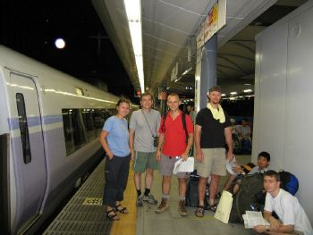 |
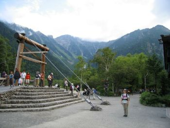 |
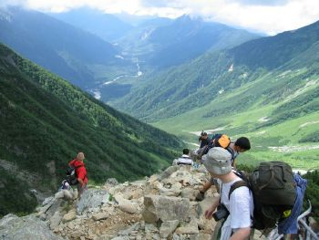 |
| at Tokyo station |
Kamikochi |
in Dakesawa valley |
|
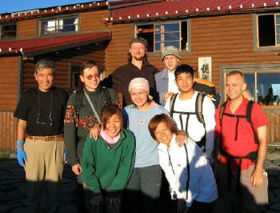 |
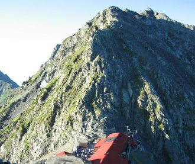 |
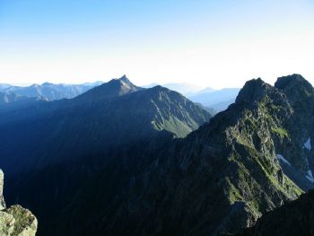 |
| at Hotaka-dake hut |
Oku-hotaka-dake |
Yari ridge (see the pointed shape
of Yari in background) |
|
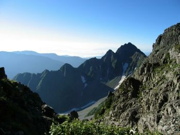 |
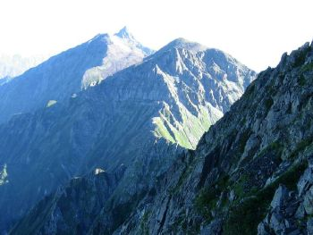 |
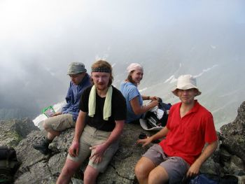 |
| Mae-hota-dake |
Dai-kiretto pass
(with a view of Yari peak) |
a rest |
|
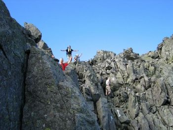 |
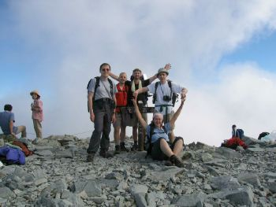 |
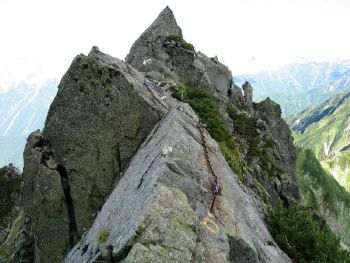 |
| flying high! |
kita-hotaka-dake |
the path |
|
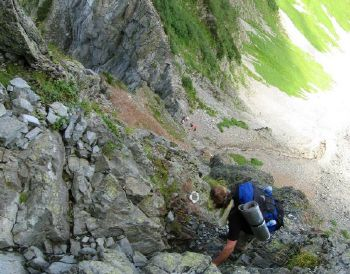 |
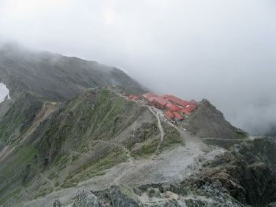 |
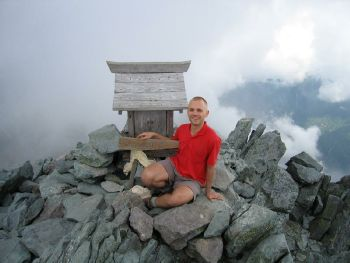 |
| looking down! |
Yari-dake hut |
on Yari!!! |
|
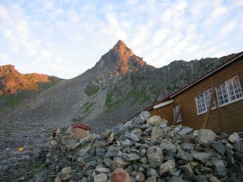 |
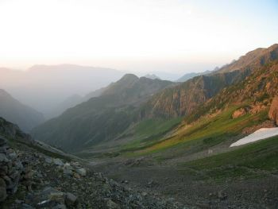 |
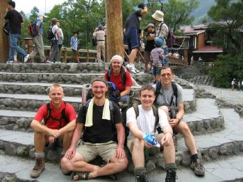 |
| a view of Yari |
Yari-sawa valley |
back at Kamikochi! |
Report by
Michal:
Hello everyone :)
We have successfully climbed Okuhotakadake and Yarigadake via Daikiretto
and safely returned back. Mission completed.
And now I will try to
describe how beautiful it was.
Start: Daniel, Victoria, Alexander and me took a bus from Tsukuba to
Tokyo - Shinjuku at Friday 20:30.
Since we had some time before
departure of our train, we sat down, observed girls and ate chocolate.
Daniel went shopping :))
After we spent some time with this leisure
activities, we moved to the platform, where we met Mariush and Jackson.
Unfortunately, at that moment (cca 7 min. before the train leaving) we
discovered an interesting fact, that all the seats in this train are
reserved
and we would not officially be allowed to board in.
In an desperate attempt to buy reservation, me and Mariush rushed to the
ticket office only to found a Japanese officer who confirmed above
stated situation.
Since this particular train was the only one by which we could get to
the Matsumoto station in time, we just board in and stopped worrying
about seat reservation
and decided to try passive resistance in case
someone would try to throw us away. Fortunately this was not necessary.
Additional 3000Y to the conductor solved whole situation.
After this slight struggle and few hours trying to sleep in train we
finally came to Matsumoto station, where we changed train
and moved to
Shinshimashima station where we boarded bus and finally came to
Kamikochi.
The weather was quite fine, time to time a cloud, but otherwise clear
sky. We started hiking towards Okuhotakadake at about 7:15 am.
We were optimistic, full of energy and looking forward for whatever
adventure was in front of us. Thus we walked quite quickly and
everything went smoothly
except the weather, which started to change
gradually and at about 50 m below the Okuhotakadake peak we were caught
by heavy rain
and time to time we could hear thunder roaring around.
Luckily enough, we made it to the hut in a 15 min. or so and hide
ourselves inside.
What a relief!
Fortunately, this was not the end of our luck :) In a while the sky
cleared itself again and we could enjoy our lunch outside
as well as
really beautiful views of the surrounding mountains. I cannot prevent
myself from describing the lunch as simply delicious.
Everyone took out
of their bags the best and I had not such a tasteful food for a couple
of months :)
Beside this, we could observe beautiful sunset and a
strange but impressive rainbow phenomena, which occurred at that place.
After dinner, we sat down in the hut, enjoyed tea (150Y for a cattle
(kettle?)!)
and talked with nice Japanese girls :)
After that more Japanese young
people came and we started a small party with a lot of fun including
Victoria's vodka :)))
Alex and me then stayed outside time to time sleeping and time to time
observing beautiful sky with falling stars.
Meanwhile the others
suffered snoring of other hikers in the room and could hardly sleep at
all. :)
Unfortunately, Jackson suffered some high altitude ache and decided to
go back to Kamikochi.
He took an easier route down and so we wished luck
to each other and parted in the morning.
In the morning the rest of us started early after sunrise and moved
along sharp and high mountain ridge towards Daikiretto.
The weather was
just wander (wonder)-full and we had breath taking views of the mountains around.
We approached Daikiretto with a mixed feelings. But after we climbed down
without major problems and had this adrenaline part left behind,
we were
all happy and we adjudged it as a nice sports-like part :))
But this is not to say, that it was peace (piece) of cake. Definitely not.
I completely agree with the statement which describes Daikiretto as
requiring clear thinking and the ability to grasp firmly whatever is
needed to grasp :)
And for sure, people with fear of sights shall not go
this way.
From Daikiretto we continued until we reached Yarigadake, occasionally
making a small brake to eat something or refresh ourselves at the hut.
When we reached the Yarigadake-sansou (the hut immediately under the
Yari peak) the weather changed and it was starting to rain
and we could
also hear some slight thunder, but far far away. We hide ourselves at
the hut and than Mariush and Daniel decided to climb the Yari peak.
Me,
Victoria and Alex were waiting for more favourable conditions.
After a while Mariush and Daniel returned and we agreed to meet in the
lower situated hut.
Than Alex, Victoria and me grow impatient and
climbed the Yari peak as well.
We were lucky because of the slightly bad
weather there was no one on the peak.
The only problem was that because of
the mist and clouds, we could not see much from the peak of Yari.
Then
we all gathered at the hut and spent nice evening sitting at the table,
looking around and chatting.
Then again me and Alex stayed outside
overnight. This time it was slightly warmer and we had quite a good
sleep.
In the morning we all wake up before sunrise - sky was clear and
the weather beautiful once again.
We were too lazy to go up to Yari
again, partly because we could see the crowd waiting for the opportunity
to climb up.
So I had enjoyed sunrise on the nearby ridge and soon after we started for
our final walk down the river to Kamikochi.
The final day walk was an easy one and we relaxed and took delights in
looking at the mountains, river and trees around.
In one nice place nearby a some hut, we took a rest and me and Alex
exploited
the chance and jump into the stream to take a refreshing bath.
I
recommend this to everyone :))
Than we quickly and without trouble reached Kamikochi and while waiting
for the bus to Shinshimashima, we ate lunch or whatever food we spared
until that moment.
This was more or less the end of our adventure, followed only by travel
to Tokyo by slow local trains.
We slept or talked most of the time.
As a final note I would say that this trip was great and I am sure
everyone enjoyed it very much.
I would like to express my deep thanks to all participants, who bravely
kept going even in rain and were a great company,
with special thanks to
Jackson who was able to appreciate his state of body and decided not to
go further, but climbed the highest peak of the walk anyway.
And to
Victoria, who was the only girl there and who proved to be as hard as a
rock.
Also I want to thank Paul for his help with organising the trip and
providing us with very useful informations.
Without his help this trip
could equally well be a terrible failure.
Last but not least I would like
to
thank Mariush and Daniel who were not lazy and organised important
travel details like tickets and insurance.
Again, this was a much
appreciated help.
Advice for next hikers: I did not book any hut and this was not
necessary, maybe because of the bad weather forecast there were not many
people there.
I recommend to stay at the Okuhotakadake-sansou, because
the view from the point is nice and because the tea service is also
nice.
What shall be done next time is reservation of the Moonlight
express from Tokyo.
Be aware of shortage of water supply. It is possible
to buy water at a hut (usually 200Y per liter), but the huts are
separated by several hours of walk.
Especially if one wants to cook his
own food, water turns out to be one of the critical parameters.
In case
of rain, make sure you have protected yourself and your bag as well from
the water!
Sleeping in a wet sleeping bag is not something you want to
experience twice. At least what I can say :)))
Start early. Best is to
wake up some time before sunrise and quickly after leave for the walk.
Some hikers could use gloves or helmet at the harder parts. But we did
it without such an equipment quite well.
Blisters came, muscle ache came, sharp sunshine came. Be aware of this.
See you all in HotSuff on Wednesday ! :)
Best regards
Michal
Back to the
Home Page